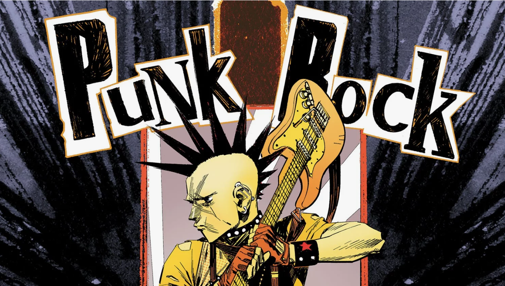

Панк
Панк-рок (Punk Rock) - жанр рок-музыки, возникший в середине 1970-х годов. Характеризуется быстрыми темпами, жестким звучанием, простыми мелодиями и текстами, часто выражающими социальный или политический протест.
История панка
Панк-рок зародился в США и Великобритании как реакция на то, что некоторые считали излишней сложностью и претенциозностью рок-музыки того времени. Панк быстро стал субкультурой, влияющей на моду, искусство и образ жизни.
Поджанры панка
- Хардкор-панк (Hardcore Punk)
- Поп-панк (Pop Punk)
- Ска-панк (Ska Punk)
- Анархо-панк (Anarcho-Punk)
Известные панк-исполнители
- Король и Шут
- Nautilus Pompilius
- Гражданская оборона
- Ленинград
- Перемотка
Рекомендуемые альбомы
Камнем по голове
Король и Шут
Дождь прошёл в парке отдыха
Перемотка